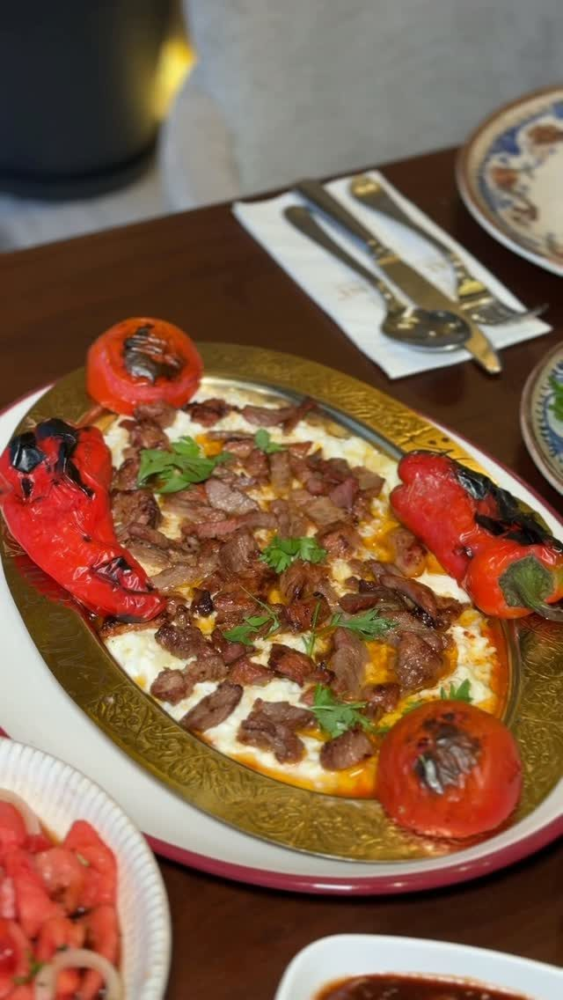
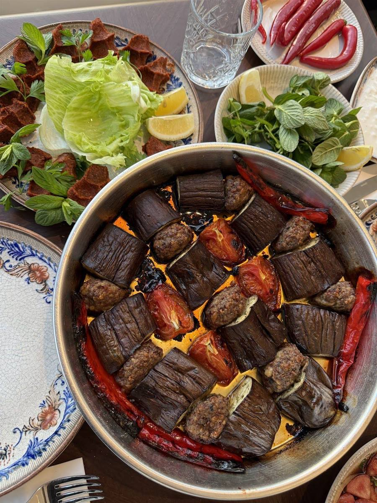
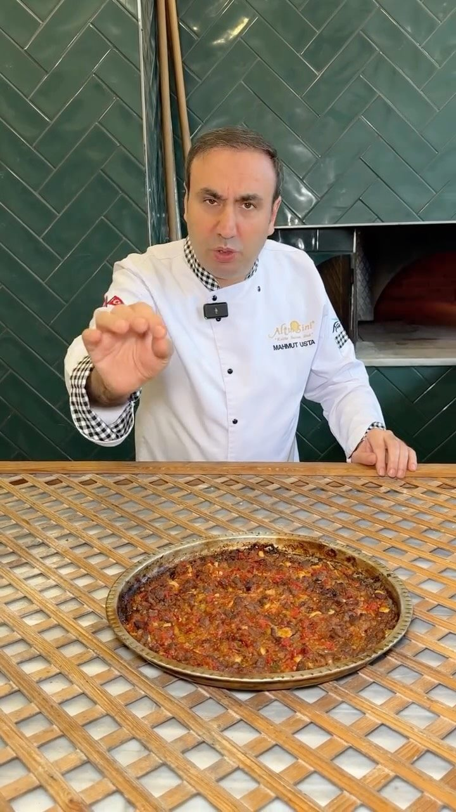
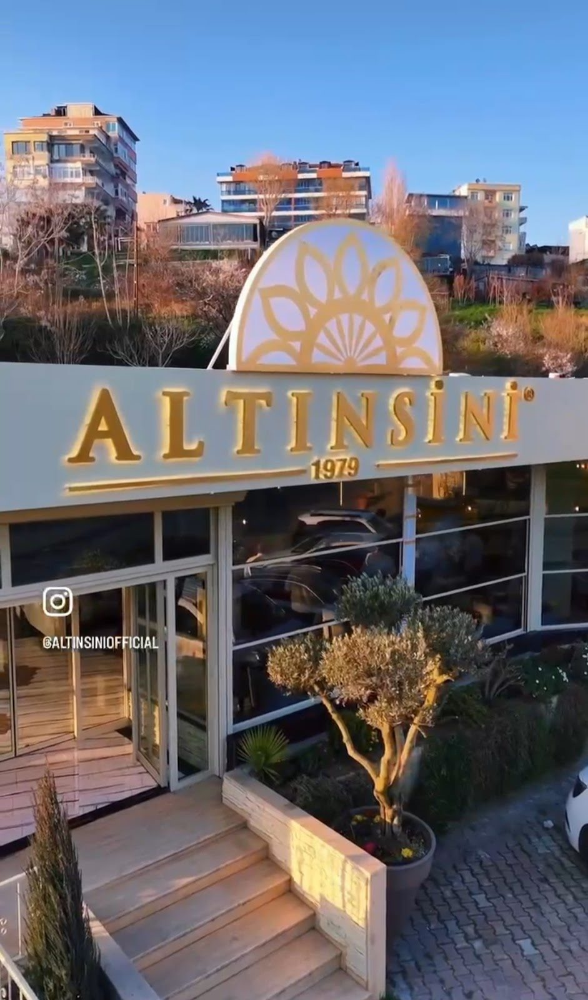

Ali Nazik Kebabı
Köz patlıcanın yumuşak dokusu, kebabın sıcaklığıyla aynı tabakta.
Avcılar · Sahil şubesi
Ortaya gelen bir kebap, paylaşılan tabaklar ve uzayan sohbetler. Altınsini’nin sofrası, Avcılar sahilinde sizi bekliyor.


Ustanın elinden
Biber kebabı, Siverek tava, açma Adana… Altınsini’nin mutfağını, yemeklerini kendi anlatımlarıyla paylaşan ustalarından dinleyin.
Mutfaktan videoları izleyin ↗Sahil şubesinden bir başka sofra
Peynirler, zeytinler ve sıcak tabaklarla kurulan kahvaltı sofrası. Güncel kahvaltı seçeneklerini ve servis saatlerini ziyaretinizden önce öğrenebilirsiniz.
Kahvaltı için bilgi alınMisafirlerimizin gözünden
“Lezzetler efsane”Emre IşıkYorumu Google’da okuyun ↗
“fındık lahmacunu içli köftesi mükemmel ötesi”Yusuf AkgüçYorumu Google’da okuyun ↗
“Yeni mekan Ferah ve keyifli olmuş Kebaplar her zamanki gibi lezzetli.”Hakan AkgündüzYorumu Google’da okuyun ↗
Google yorumlarından kısa alıntılar. Puan ve yorum sayısı 2 Kasım 2026 tarihinde kontrol edilmiştir.
11.00 – 00.00
Saatler resmî hesapta belirtilmiştir. Özel günlerde ziyaret öncesi telefonla bilgi alabilirsiniz.
